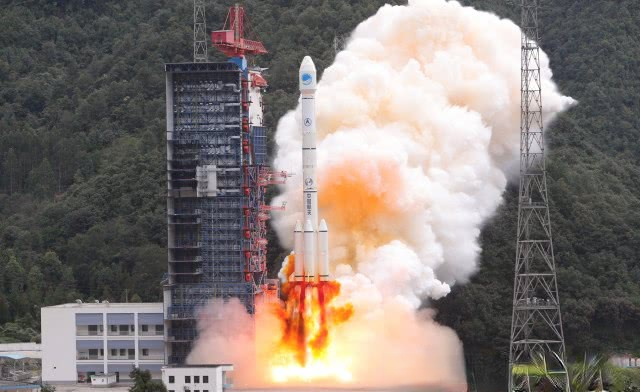

不到一个月前从海南文昌发射中心传来失利消息，由长征七号改装而来的运载火箭发射失败，火箭在仅发射起飞三分钟后 便成为了火球，故障时间定格在火箭一二级推进器进行分离时，第二级所装载的YF-115发动机点火后，最终发生爆炸而导致火箭解体。这座最南部的火箭发射场见证了中国航天2020年的首败，但仅仅相隔24天后，位于我国西南部的西昌发射场 再次传来火箭发射失利的消息，这次的主角是长征火箭家族的长征三号乙，短短20多天两次火箭发射失利，这样的事实让所有人难以置信。
短短不到一个月两次重要火箭发射失利让2020中国航天蒙尘
2020年开局可谓是极为艰难的一年，中国超级航天一年的任务同样蒙尘。2020年4月9日入夜之时，由中国运载火箭技术研究院打造的 长征三号乙三级液体火箭，在四川境内的西昌火箭发射中心蓄势待发。长征三号乙此次承担的发射任务较为特殊， 因为这颗火箭搭载的卫星是中国替印度尼西亚发射的通信卫星。在所有火箭发射事宜全部就位后，本以为一次平常 无异的发射任务，却在19点46分点火升空后的几分钟，火箭的第三级连同卫星一起爆炸坠毁，让在场发射人员无比痛心。
自首飞成功后的24年间成熟度极高的长征三号乙为何发射失利？
随着有关部门正式宣布发射失利时，长征三号乙的故障处理工作也在进行中。目前已知火箭在第一级、第二级分离正常，但在第三级火箭发动机点火后不久就出现故障，具体原因还需要后续的逐一排查。反观长征三号乙自上世纪首飞后的24年间，曾承担过北斗卫星、 亚太卫星等一系列任务，也是中国承接国内外商业卫星发射的老牌火箭，其最高进行过连续数十次的高强度发射，而且长征三号乙在上月初成功搭载北斗三号卫星升天。在中国航天的全系列火箭中，长征三号乙的成熟度和成功率相对较高。